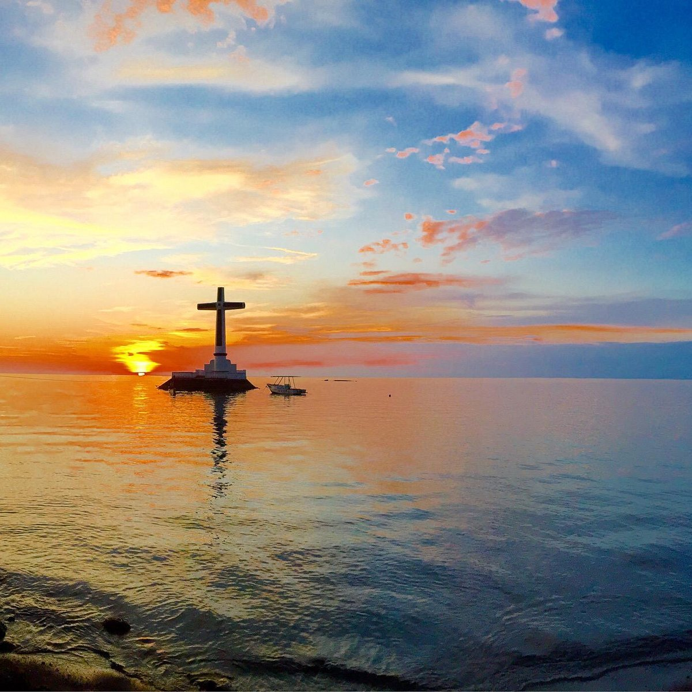
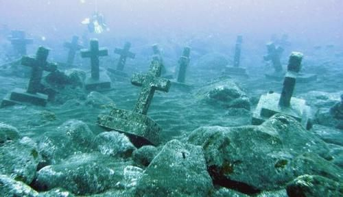
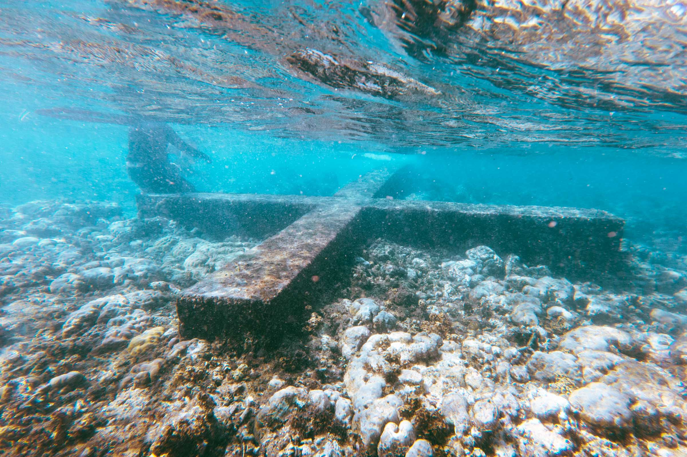
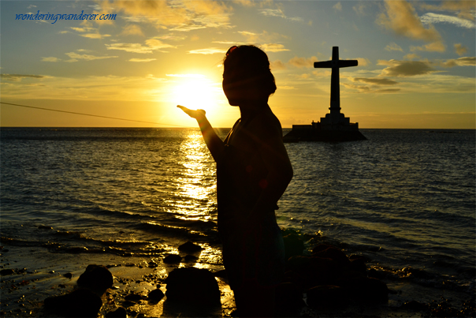
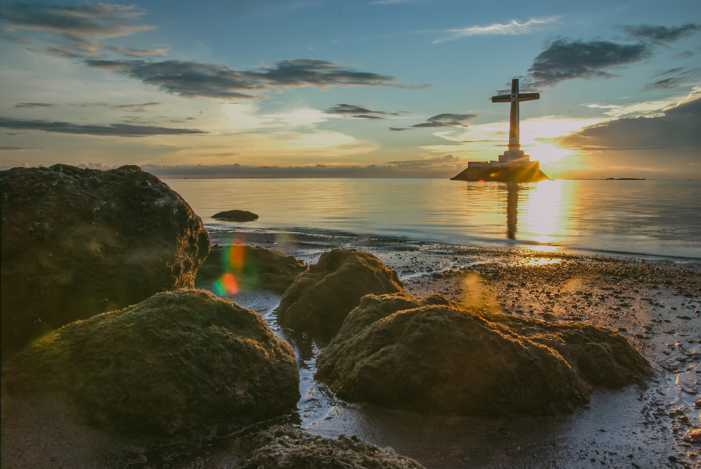

About the Sunken Cemetery
The Sunken Cemetery is one of Camiguin's most unique and historically significant landmarks. In 1871, a series of violent volcanic eruptions from Mt. Vulcan caused a portion of the island — including an entire cemetery — to sink beneath the sea. Today, the site is marked by a large concrete cross erected above the water, visible from the shoreline and serving as a lasting memorial to those buried there.
Beneath the surface, the submerged cemetery has transformed into a vibrant marine sanctuary. Coral formations have grown over the old tombstones and grave markers, creating an extraordinary underwater landscape that attracts divers and snorkelers from around the world. It is a place where history and nature have merged in a way that is both eerie and beautiful.





Diving and Snorkeling
The site is accessible by boat from Bonbon Beach. Snorkeling gear can be rented locally. The shallow waters make it accessible even for beginners.
Getting There
Located near Bonbon in the municipality of Catarman. Hire a bangka boat from the beach. The cross is visible from the shore and is a short ride offshore.
Travel Tips
Visit during the Undas season to witness locals holding a special mass near the cross — a deeply moving and unique cultural tradition.